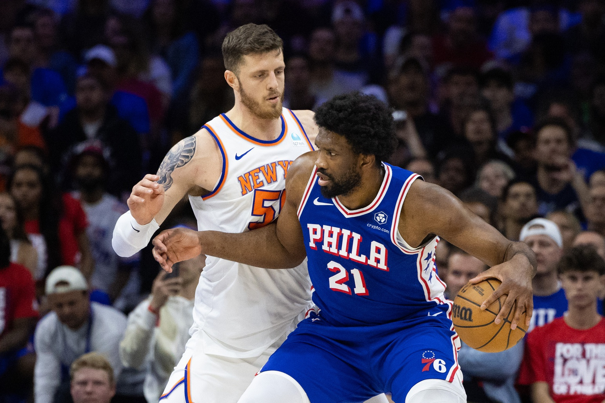
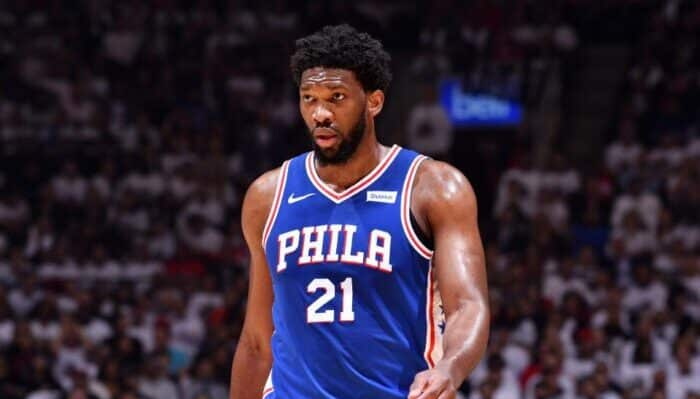
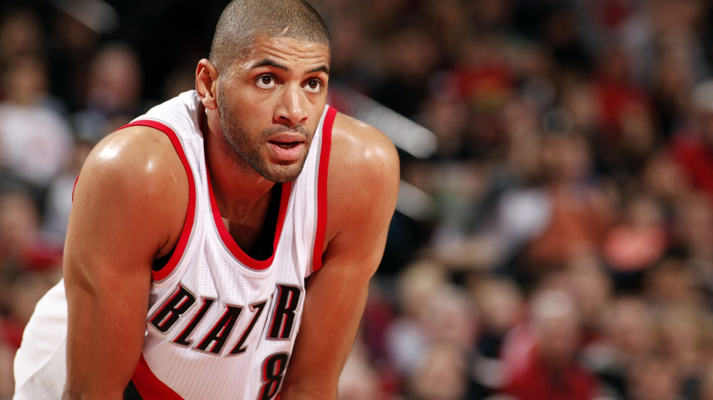

U.S décrypte
NEWSLETTER

Le joueur a reruse de derenare les couleurs de la France pour le tournoi olvmpique 2024 alors que ce dernier à demander la naturalisation. « Je suis né Ou Cameroun, j'ai toujours voulu
représenter mon pays .mais le but est aussi de jouer aux Jeux olympiques »,
aussi de jouer aux Jeux olympiques », avait-il indiqué ce dernier.
J.Embiid refuse de jouer pour la France
Elimination des Sixers

U.S décrypte
NEWSLETTER

Avec 16 poinis dans le Game o race aux.
Knicks, Nicolas Batum a terminé la saison
sur une donne nole. sur le olan individuel
Une saison particulière pour le Français puisqu'il a été transféré à Philadelphie alors que sa famille est restee a Los
Angeles. Titulaire à 38 reprises, mais plus
en playoffs. il a comblé les trous. defendu,
marqué les tirs ouverts (40% de réussite à
3-pts) apoolle soll eAoerence， à 35 ans
passés